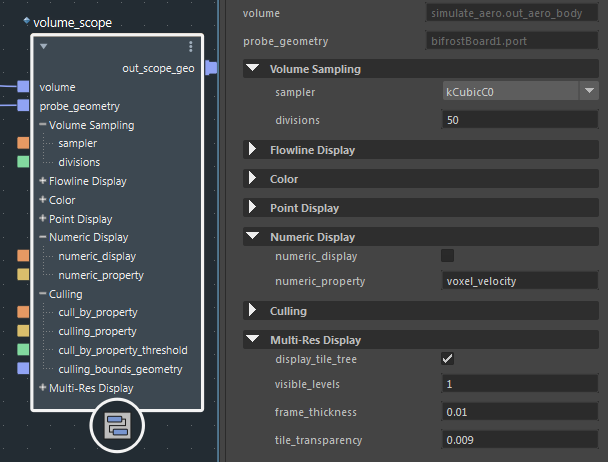

使用端口组将端口组织为可收拢的标题。在图表中的节点上以及“参数编辑器”(Parameter Editor)中将显示这些标题。

在复合外部，右键单击端口，然后单击“添加到组 > 新建”(Add to Group > New)。
输入组的名称。
右键单击其他端口以将其添加到您已创建的组，或者创建其他组。
如果端口位于组中，则上下文菜单中的“移动端口”(Move Port)命令会影响该端口在组中的位置。
若要从组中移除端口，请右键单击该端口，然后选择“从组中移除”(Remove from Group)。
您还可以使用“自定义 UI”(Customize UI)编辑器添加和修改端口组。